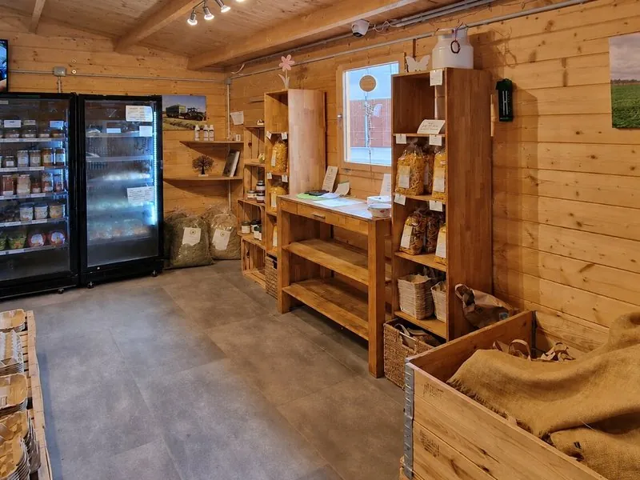

Kompleksowa sprzedaż bezpośrednia
Projektujemy cały model sprzedaży przy gospodarstwie: mlekomat do świeżego mleka, automat chłodniczy na sery, jaja, butelki i przetwory, pawilon z estetyczną zabudową oraz dokumenty, finansowanie, montaż i wdrożenie.
Co wchodzi w skład
01
Estetyczna zabudowa na Twojej działce: miejsce na mlekomat, automat chłodniczy, butelki, instrukcje dla klienta i oznaczenie gospodarstwa. Pawilon porządkuje punkt, chroni urządzenia i może być przygotowany pod monitoring.
zamknięcie, porządek, zaufanie02
Serce sprzedaży mleka: szwajcarski mlekomat (Brunimat) z certyfikatem CE-MID, chłodzeniem, płatnościami, komunikatami GSM, alarmami i obsługą po polsku.
certyfikat CE-MID03
Drugi filar punktu: chłodzony automat na sery, jaja, jogurty, masło, butelki i lokalne przetwory. Klient podjeżdża po mleko, a przy okazji może kupić resztę produktów z gospodarstwa.
produkty dodatkowe bez obsługi04
Sprawdzamy możliwości finansowania inwestycji: leasing, kredyt, środki własne oraz aktualne programy wsparcia rolniczego, w tym programy ARiMR. Pomagamy przygotować dokumenty, a opłacalność liczymy jako orientacyjny scenariusz.
indywidualna analiza05
Koordynujemy transport, ustawienie urządzeń, konfigurację płatności, szkolenie i pierwsze testy sprzedaży. Rolnik nie musi osobno spinać kilku wykonawców.
cała Polska06
Komunikaty o poziomie mleka, podgląd sprzedaży, alarmy i uporządkowana obsługa punktu. Docelowo punkt ma działać przewidywalnie, nawet gdy Ty jesteś w pracy przy gospodarstwie.
24/7Krok po kroku
Sprawdzamy, co chcesz sprzedawać: samo mleko, mleko z butelkami, czy pełniejszy punkt z jajami, serami i przetworami. Patrzymy na lokalizację, liczbę klientów, miejsce pod urządzenia i możliwości finansowania.
0 zł · bez zobowiązańOceniamy ruch, dostępność, potencjał sprzedaży i to, czy punkt ma działać jako prosty mlekomat, czy jako mały sklep 24/7. Razem wybieramy układ: mlekomat, automat chłodniczy, pawilon, butelki i oznaczenie.
analiza · doradztwoPrzygotowujemy zakres pod Twoje gospodarstwo: urządzenia, pawilon, wyposażenie, dokumenty, harmonogram i plan startu sprzedaży. Nic nie jest dodawane bez sensu — wariant dobieramy do realnego potencjału.
indywidualna wycenaGotówka, leasing rolniczy czy program wsparcia ARiMR — analizujemy, co w Twojej sytuacji ma sens. Pomagamy przygotować dokumenty i przejść proces, ale decyzja zależy od programu, naboru i instytucji.
leasing · zakup · dofinansowanieStawiamy albo przygotowujemy miejsce, montujemy mlekomat, automat chłodniczy i elementy punktu sprzedaży. Konfigurujemy płatności, komunikaty, podstawową obsługę i szkolimy z codziennej pracy.
kompleksowy montaż · szkolenieTestujemy mlekomat, automat chłodniczy, płatności, instrukcje dla klienta i układ produktów. Ustawiamy pierwsze komunikaty oraz prosty plan lokalnego marketingu, żeby ludzie wiedzieli, że punkt już działa.
uruchomienie · wsparcie startoweKlient może kupić mleko, butelki i produkty dodatkowe bez czekania na obsługę. Ty widzisz sprzedaż, reagujesz na komunikaty, uzupełniasz produkty i rozwijasz lokalną bazę stałych klientów.
od pierwszego dnia · cała PolskaAsortyment
Tak powstaje prawdziwy punkt sprzedaży bezpośredniej 24/7: mleko z BRUNIMAT, produkty dodatkowe z automatu chłodniczego, a całość schowana w estetycznym pawilonie przy gospodarstwie.

Kalkulator zysku
Przesuń suwaki i sprawdź orientacyjny przychód z mlekomatu i całego sklepu przy gospodarstwie.
Przejdź do kalkulatora →Finansowanie
Trzy drogi do inwestycji — dobieramy to co ma sens w Twojej sytuacji finansowej.
| Kryterium | 💰 Dotacja ARiMR | 📋 Leasing rolniczy | 🛒 Zakup bezpośredni | 🤝 Leasing + program wsparcia |
|---|---|---|---|---|
| Wkład własny | Zależy od programu zwykle 20–50% |
Niski często 10–20% |
100% | Bardzo niski dofinansowanie może pokryć część |
| Własność maszyny | Od razu Twoja | Po wykupie leasingu | Od razu Twoja | Po wykupie leasingu |
| Miesięczne koszty | Brak rat | Stała rata ~1 400–1 800 zł/mc |
Brak rat | Niższa rata dofinansowanie może redukować kapitał |
| Czas oczekiwania | Dłuższy wniosek + nabór ARiMR |
Szybki 2–4 tygodnie |
Najszybszy 1–2 tygodnie |
Średni leasing szybko, program osobno |
| Korzyść podatkowa | Odliczenie VAT | Rata w kosztach + VAT | Odliczenie VAT | Rata w kosztach + VAT |
| Dla kogo najlepsze | Kto czeka na nabór i ma czas na papiery | Kto chce zacząć szybko z minimalnym kapitałem | Kto ma gotówkę i chce prosty scenariusz inwestycyjny | Kto chce najniższy wkład własny ogółem |
| Pomagamy z tym? | ✓ Tak | ✓ Tak | ✓ Tak | ✓ Tak |
Dane orientacyjne — warunki leasingu i programów wsparcia zależą od aktualnych ofert i naborów. Analizujemy Twoją sytuację indywidualnie i mówimy wprost co się opłaca. Zapytaj bezpłatnie →
Bezpłatna rozmowa — bez zobowiązań. Powiemy wprost czy i co ma sens w Twoim przypadku.